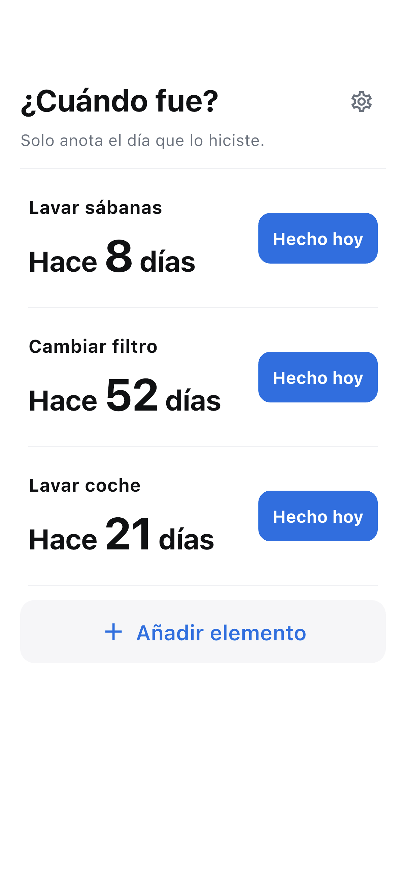

Ponle nombre
Añade la limpieza, cambio o cuidado que quieras recordar. Solo necesitas un nombre.
¿Cuándo fue? · iOS / Android
Registra limpiezas, cambios y cuidados. Consulta cuánto tiempo ha pasado.
Ver cómo funcionaEn preparación

CÓMO FUNCIONA
Añade la limpieza, cambio o cuidado que quieras recordar. Solo necesitas un nombre.
Hecho hoy guarda al instante. Deshaz los toques por error.
Mira los días transcurridos en Inicio y toca un elemento para ver el historial y la media.
LO ESENCIAL
Sin recordatorios ni ciclos recomendados. Las medias reflejan tus propios registros.
Los elementos y el historial se guardan en el dispositivo. Puedes registrar sin conexión. La publicidad usa internet.
Las copias del sistema pueden incluir los datos, sin garantía de recuperación.
Leer la política de privacidad →